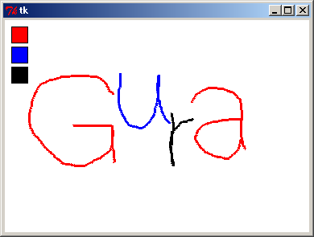

GUI 操作
Gura は GUI アプリケーション構築用に Tcl/Tk へのインターフェースを用意しています。
以下はボタンウィジェットを一つ持ったウィンドウを作る例です。
import(tk)
tk.mainwindow() {|mw|
mw.Button(text => 'Push me') {|w|
w.pack()
w.bind(`command) {
w.tk$MessageBox(title => 'event', message => 'hello')
}
}
}
tk.mainloop()
お絵かきプログラムです。 TkDocs のサンプルをポーティングしました。
import(tk)
tk.mainwindow() {|mw|
mw.Canvas(bg => 'white') {|c|
c.pack(fill => 'both', expand => true)
[lastx, lasty] = [0, 0]
color = 'black'
c.bind('<1>') {|x:number, y:number|
[lastx, lasty] = [x, y]
}
c.bind('<B1-Motion>') {|x:number, y:number|
addLine(x, y)
}
addLine(x:number, y:number) = {
extern(lastx, lasty)
c.Line(lastx, lasty, x, y, fill => color, width => 3)
[lastx, lasty] = [x, y]
}
setColor(colorNew:string) = {
color:extern = colorNew
}
function(color:string, y:number):map {
c.Rectangle(10, y, 30, y + 20, fill => color) {|item|
item.bind('<1>') { setColor(color) }
}
}(['red', 'blue', 'black'], 10 + (0..) * 25)
}
}
tk.mainloop()
実行例
